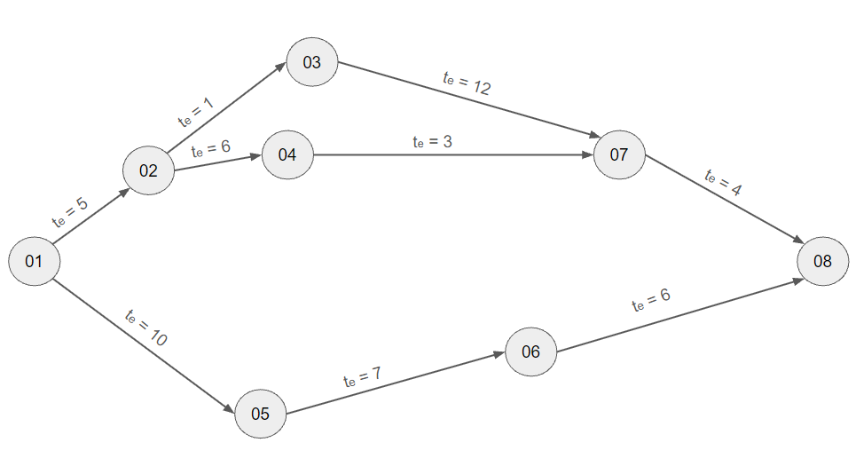

TE (Evento 23) = 21
Se a sua resposta não estiver certa ou se você quiser rever o que dissemos, vire para a página 77.
Caso sua resposta esteja certa, continue nesta página.
Dê uma olhada neste rede PERT e preencha os TE‘s na Tabela abaixo:

EVENTO # TE
1 0
2
3
4
5
6
7
8
Agora, vire para a página 78 para verificar as respostas.